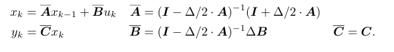
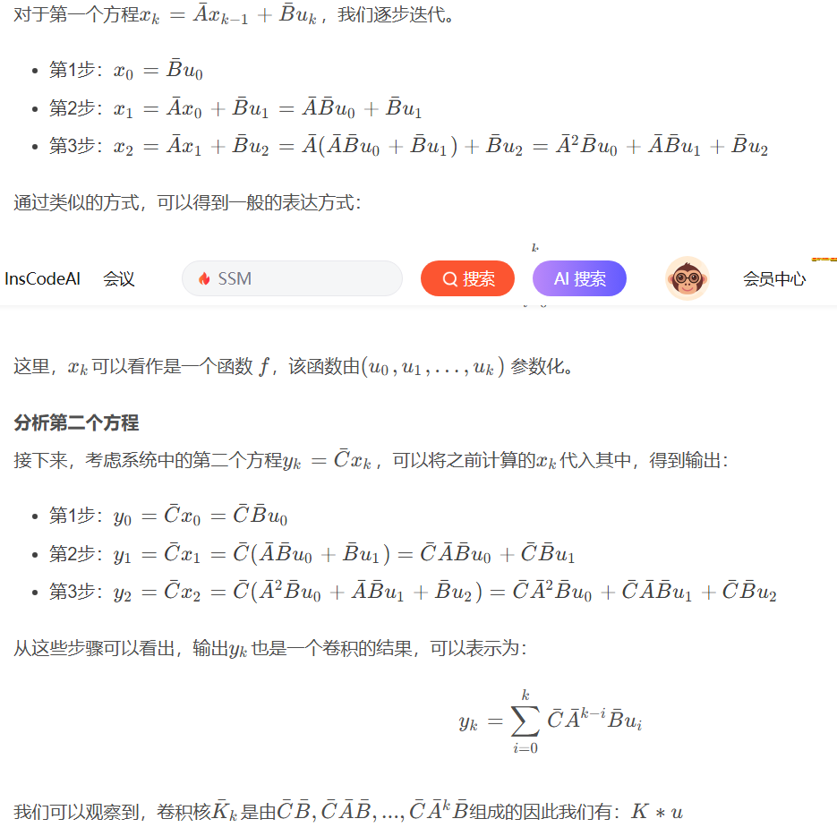
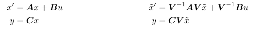
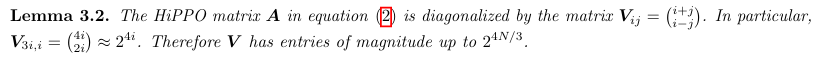
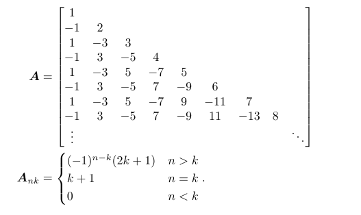
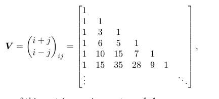
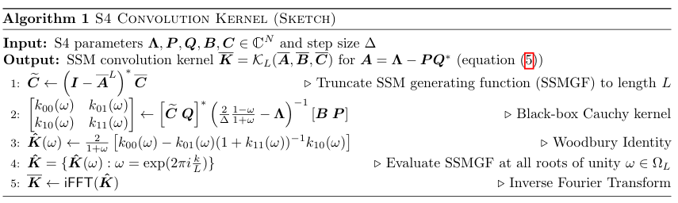

author: 顾家琛 university: NUDT email: gujiachen21@nudt.edu.cn time: %%date%%time
$$x^{'}(t) = Ax(t) + Bu(t)$$ $$y(t) = Cx(t) + Du(t)$$
其中，(x(t) \in \mathbb{R}^{N1},\quad y(t)\quad and\quad u(t) \in \mathbb{R}) (A \in \mathbb{R}^{NN},B \in \mathbb{R}^{N1},C \in \mathbb{R}^{1N},D \in \mathbb{R} )
状态空间定义如\ref{eq 1}。
\label{ $$\begin{equation} \begin{aligned} a &= b + c \ d &= e + f \ g &= h + i \end{aligned} \end{equation}$$ }{eq 1}
先前的SSM应用较差，可能是因为线性一阶常微分方程的解是指数函数，因此在序列长度较长时，梯度可能会呈指数级增长或衰减（即存在梯度消失/爆炸问题）。
HiPPO提出了一类特殊矩阵\ref{eq 2}，状态 x(t) 可以有效记忆输入 u(t)
\label[1] { $$\begin{equation} (HiPPO\quad Matrix) A_{nk} = - \begin{cases} \sqrt{(2n + 1)(2k + 1)} & \text{if } n > k \ n + 1 & \text{if } n = k \ 0 & \text{if } n < k \end{cases} \end{equation}$$ }{eq 2}
在原点sT/2=0处进行泰勒展开，并砍去高阶项，很容易得到 $z = e^{sT} = \frac{e^{sT/2}}{e^{-sT/2}} \approx \frac{1+sT/2}{1-sT/2}$ 进而可得 $s = \frac{2}{T}\frac{1-z^{-1}}{1+z^{-1}}$ 接下来将$\textit{z} = e^{jw}$带入 $$\begin{align*} \textit{s} &= \frac{2}{T}\frac{1-e^{-jw}}{1+e^{jw}} \ &=\frac{2}{T}\frac{e^{jw/2}-e^{-jw/2}}{e^{jw/2}+e^{-jw/2}} \ &=\mathit{j}\frac{2}{T}\frac{\mathit{sin(w/2)}}{\mathit{cos(w/2)}} \ &=\mathit{j}\frac{2}{T}\mathit{tan(w/2)} \end{align*}$$
原式状态方程 $$ \begin{align} x'(t) &= Ax(t) + Bu(t)\ y(t) &= Cx(t) + Du(t) \end{align} $$
下面对公式（3）进行推导。
先进行拉式变换得到 $\mathcal{L}[x'(t)] = A\mathcal{L}[x(t)] + B\mathcal{L}[u(t)]$ 化简得到 $sX(s) - X(0) = AX(s) + BU(s)$ 其中(X(0) = 0)，则 $sX(s) = AX(s) + BU(s)$ 接下来应用双线性变换，即代入(s = \frac{2}{T}\frac{1-z^{-1}}{1+z^{-1}})，并移项化简得到 $zX(z) = (I-\frac{T}{2}A)^{-1}(I + \frac{T}{2}A)X(z) + (I-\frac{T}{2}A)^{-1}(z+1)BU(z) $ 进行逆z变换，变换到t域 $X(z+1) + x(0) = (I-\frac{T}{2}A)^{-1}(I + \frac{T}{2}A)X(z) + (I-\frac{T}{2}A)^{-1}(z+1)BU(z)$ $X(z+1) = (I-\frac{T}{2}A)^{-1}(I + \frac{T}{2}A)X(z) + (I-\frac{T}{2}A)^{-1}B(U(z+1)+U(z))$ $x(t+1) = (I-\frac{T}{2}A)^{-1}(I + \frac{T}{2}A)x(t) + \frac{T}{2}(I-\frac{T}{2}A)^{-1}B(u(t+1) + u(t)) $
论文中可能使用了(\frac{1}{2}(u(t+1)+u(t)) \approx u(t+1)) 最终得到 \label{ }{eq 3}

原本的SSM计算有大量重复的矩阵计算，在LSSL中需要(O(N^2L))次计算和(O(NL))大小的空间
Lemma 3.1. 共轭的等价替换$(A,B,C) \sim (V^{-1}AV,V^{-1}B,CV)$

通过$V$将$A$转换为对角矩阵，特别是$\overline{K} \in \mathbb{R}^{N*L} = (\overline{CB},\overline{CAB},\dots,\overline{CA^{L-1}B})$是一个范德蒙德矩阵(Vandermonde product)，计算需要(O(N+L)log^2(N+L))计算。
然而，由于数值问题，直接应用对角化方法并不奏效。
Lemma 3.2. 
 目标是证明矩阵A能被V对角化  其中V是组合数矩阵(V_{5,3} = C_{5+3}^{5-3} = 28) 即证明 $Av^j = [\underset{k}{\sum} A_{ik} v_k^j ] = [(j+1)v_i^j] $
下面分类讨论：
事实上HiPPO矩阵没办法正常对角化，只能化为一个正规矩阵和一个低秩矩阵，此外还加入了三种新的技术。

Note: C现在是转置矩阵$C \in \mathbb{R}^{N \times 1}$
假设A是DPLR
$$ \underset{i=0}{\overset{\infty}{\sum}} A^i z^i = (I - A)^{-1} $$ $$ \underset{i=0}{\overset{L-1}{\sum}} A^i z^i = (I - A^Lz^L)(I - A)^{-1} $$
那么有 $$ \mathcal{K}_L(\overline{A}, \overline{B}, \overline{C}) = (\overline{C}\overline{B},\overline{C}\overline{A}\overline{B},\dots,\overline{C}\overline{A}^{L-1}\overline{B}) \in \mathbb{R}^L $$ 则卷积核对应的生成函数 $$ \mathcal{K}_L(z;\overline{A}, \overline{B}, \overline{C}) \in \mathbb{C} = \underset{i=0}{\overset{\infty}{\sum}} \overline{C}\overline{A}^i\overline{B}z^i $$ 在序列长度为L的截断生成函数为 $$ \mathcal{K}_L(z;\overline{A}, \overline{B}, \overline{C}) \in \mathbb{C} = \underset{i=0}{\overset{L-1}{\sum}} \overline{C}\overline{A}^i\overline{B}z^i = \overline{C}(I - \overline{A}^Lz^L)(I - \overline{A})^{-1}\overline{B} $$
为了方便，有如下定义 $$ \begin{aligned} \overline{K} &= \mathcal{K}_L(\overline{A}, \overline{B}, \overline{C}) \ \hat{K} &= \mathcal{K}_L(\Omega;\overline{A}, \overline{B}, \overline{C}) \ \hat{K}(z) &= \mathcal{K}_L(z;\overline{A}, \overline{B}, \overline{C}) \ \overline{K}_i &= \overline{C}\overline{A}^i\overline{B} \end{aligned} $$
并且有 \label{ $$ \begin{equation} \hat{K}j = \sum{k=0}^{L-1}\overline{K}_k e^{-2\pi i \frac{jk}{L}} \end{equation} $$ }{eq 4}
\ref{eq 4}和离散傅里叶变换形式相同，因此(\overline{K})可以通过快速逆傅里叶变换求出。
$$ (A+BCD)^{-1} = A^{-1} - A^{-1}B(C^{-1} + DA^{-1}B)^{-1}DA^{-1} $$ 其中(A+BCD、A、C、C^{-1} + DA^{-1}B)可逆，并且(A \in \mathbb{R^{mm}}, B \in \mathbb{R^{mn}}，C \in \mathbb{R^{nn}}, D \in \mathbb{R^{nm}})
对于(\overline{A})这个DPLR矩阵而言，其可以变为$A+UV^T$，并且$A、I+V^TA^{-1}U$均可逆，则有
\label{ $$ \begin{equation} (A+UV^{T})-1 = A^{-1} - A^{-1}U(I_p + V^{T}A^{-1}U)^{-1}V^TA^{-1} \end{equation} $$ }{eq 3}
首先根据双线性离散化有\ref{eq 3}
$$ \begin{aligned} C^T(I-\overline{A}z)^{-1}\overline{B} &= C^T[I-(I-\frac{\Delta}{2}A)^{-1}(I+\frac{\Delta}{2}A)z]^{-1}(I-\frac{\Delta}{2}A)^{-1}\Delta B \ &=C^T[(I-\frac{\Delta}{2}A) - (I+\frac{\Delta}{2}A)z]^{-1}\Delta B \ &= C^T[I(1-z)-\frac{\Delta}{2}(1+z)A]^{-1}\Delta B \ &= \frac{2\Delta}{1+z}C^T[2\frac{1-z}{1+z}I - \Delta A]^{-1}B \end{aligned} $$
$$ \begin{aligned} \hat{K}(z) &= \frac{2}{1+z}[\tilde{C}^TR(z)B-\tilde{C}^TR(z)P(1+QR(z)P)^{-1}QR(z)B] \ \tilde{C}^T &= \overline{C}^T(I-\overline{A}^L) \ R(z;\Lambda) &= (\frac{2}{\Delta}\frac{1-z}{1+z} - \Lambda)^{-1} \end{aligned} $$
代入Lemma 3即可
论文中提到(\tilde{C}^T)可以直接通过训练得到，避免计算。
通过之前的分析，现在只需要计算SSM阶段生成函数，再经过逆傅里叶变换即可得到(\mathcal{K}_L(\overline{A},\overline{B},\overline{C}))
一个在$\Omega =(\omega_i)\in \mathbb{C}^M 和 \Lambda = (\lambda_j)\in \mathbb{C}^N $的柯西核 $$ M\in \mathbb{C}^{M \times N} = M(\Omega, \Lambda) = (M_{ij}){i\in[M],j\in [N]} \qquad M{ij} = \dfrac{1}{\omega_i - \lambda_j} $$
一个柯西核需要(O(M+N))空间，操作计数为
$$ \mathcal{C}(M,N) = \begin{cases} O(MN) & naively\ O((M+N)log^2(M+N)) & in\quad exact\quad arithmetic\ O((M+N)log(M+N)log\frac{1}{\epsilon}) & 精度\epsilon \end{cases} $$
对于任意一组$\Omega \in \mathbb{C}^L$、对角矩阵(\Lambda)和向量P、Q, 计算$Q^T R(\Omega; \Lambda)P$(定义在引理三), 可以在$\mathcal{C}(L, N)$次操作和$O(L+N)$空间内完成。